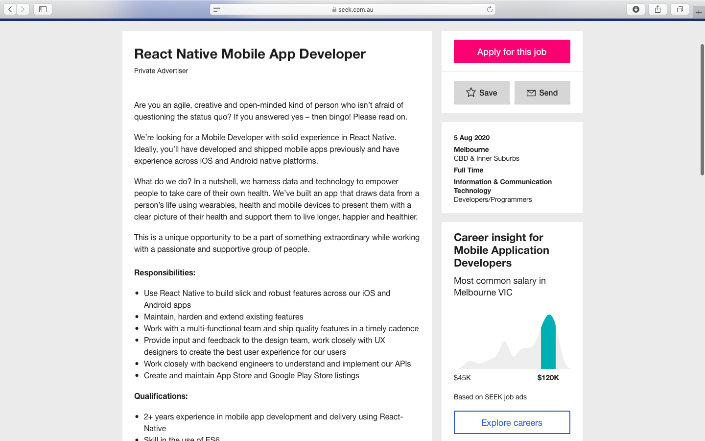

Intro

Student name: Jianxuan Xing
Student ID：s3771259
Email: s3771259@student.rmit.edu.au
My name is jianxuan xing, which is a RMIT student, i’m a international student from china，
It’s been five years since I came to Melbourne in 2015. My high school in ringwood secondary
college is really a place full of memories. After three years of high school life,
I successfully passed the VCE exam and finally entered my dream. RMIT.
- I like playing basketball and computer games such as league of legend, CSGO, I also have a cute guinea pig. He is very timid, but he likes me very much.
Background

i was in RMIT last year for diploma of IT
when i was in high school, i have learned PY charm, and also going to the work shop to help teacher with his work, since that moment i feel that I have an indissoluble bond with IT，that’s why i want to learn IT is i’m really intrested in mobile app, database and create website, when i first time touch phone, i feel that i need learn that in my li f, Especially the mobile app is very fascinating for me. The database and the relationship contained in it are some very difficult things, but I am very fascinated with these. Of course, the website is also something I love very much. The website can register an account, log in to an account and Selling things is very interesting, and I think IT is one of the most promising industries at the moment, because now is the era of big data, the popularisation of the Internet and mobile phones makes the current society very convenient. In summary, the IT industry is very promising. Prospects, this is one of the reasons why I choose IT,
Ideal Job

My ideal job is to create an app, be an IT engineer, Learning to make mobile phone software can exercise my logical thinking very well. In the process of making mobile phone applications,
I will use SQL and other software, which is just the course I learned. I can also use user center design to make a good one. Mobile phone software can bring very high profits and accumulate a huge number of users. When I make other software, users will actively choose our software. The IT field in Australia is currently in a stage of development. i have search the job on seek.com.au
 Responsibilities:
Design and develop mobile applications for iOS and Android
Maintain iOS and Android codebases
Manage release of mobile applications to the iOS and Android app stores
Experience:
Deep knowledge of mobile best practice across both iOS and Android
Commercial experience building and shipping iOS and Android applications
A strong understanding of Native iOS and Android languages and frameworks
Understanding of cross platform mobile app development frameworks
A strong understanding of version control (Git/GitHub) and automated testing methodologies
Excellent communication and problem solving skills
Responsibilities:
Design and develop mobile applications for iOS and Android
Maintain iOS and Android codebases
Manage release of mobile applications to the iOS and Android app stores
Experience:
Deep knowledge of mobile best practice across both iOS and Android
Commercial experience building and shipping iOS and Android applications
A strong understanding of Native iOS and Android languages and frameworks
Understanding of cross platform mobile app development frameworks
A strong understanding of version control (Git/GitHub) and automated testing methodologies
Excellent communication and problem solving skills
i have learned mobile android studio and database design for app, also git hub I still lack ios-related knowledge, and I will continue to learn about ios code in the future I lack suitable work experience. I will find an internship in the past two years to learn relevant experience to meet the requirements of this company
I will also check some websites and download some more apps in my spare time to see the relevant knowledge to fill in the parts I have not learned. Check the website of seek to let me know my shortcomings and what knowledge should be learned to apply for these positions, youtube There are also some areas that I have not touched, such as ios code. I will also read some ios-related knowledge in my spare time.
Project idea.
Summary
The Aging of the population has become a problem of widespread concern in society. Many lone elderly people, when their health problems occur, are there any ways to discover this situation in time? My idea is to make a The app can monitor the physical condition of the elderly in real time, whether it is children or the governmentYou can monitor your family’s health data in real time, such as acute diseases such as heart disease, hypertension, etc. The app can call an ambulance in time when there is an
Motivation
The Australian population is ageing, with older Australians a growing proportion of the total population. In 2017, 15% of Australians (3.8 million) were aged 65 and over; this proportion is projected to grow steadily over the coming decades.
Growth in the proportion of older Australians is partly due to increasing life expectancy: in 2014–16, a 65-year-old man could expect to live another 20 years and a 65-year-old woman another 22 years—7 years longer for both sexes than in the mid-1960s. Overall, Australians now enjoy one of the highest life expectancies in the world. These increases in life expectancy have generally not come at the expense of reduced functioning or worsened general health (see Health and functioning). This is a very Astonishing data.At the same time, the chance of old people suffering from diseases is very high This shows the importance of this app.
Description.
This application is composed of two aspects. The first part is that a medical device is similar to a bracelet that can be worn on the hand to monitor real-time data. The second part is that a mobile phone app can be connected to the bracelet to remotely monitor health conditions. The first part is made up of The second part of the partner is the project we are going to do. This app is mainly for the elderly and children. First of all, our app will provide GPS location services. Elderly people with Alzheimer’s can monitor where they go in real time. When they get lost, they can quickly find it on the mobile app. They, of course, our app also takes care of the health system. Patients suffering from hypertension, hyperlipidemia, hyperglycemia and heart disease can monitor their own physical condition through the mobile app without noticing them. Family and children can also see the data. The elderly who live alone can travel far away. Children who do not live together will be more at ease if they monitor the real-time situation. They will not worry about it all the time. Of course, we also have a chat system that can establish a group chat for lonely elderly people, so that old people can make some nearby friends or neighbors. It is also feasible for old people to share their real-time data into group chats. , People in group chat can take care of each other, and they can also see each other's physical condition on the app. When they find that their physical condition is not right, they can call an ambulance for the patient in time to escort the elderly.Of course, there are also smart apps on our app. You can play Sudoku games to exercise the brain power of the elderly and prevent Alzheimer’s. We will comprehensively evaluate your physical condition today based on data such as blood pressure, blood lipids and blood sugar, every month There will be a bar graph to show that your physical condition is rising or falling this month and recommend some health products and exercise equipment for you. Elderly people can also choose suitable health products to protect their health. We will also follow the physical conditions. We recommend crutches and fall prevention belts for some elderly people with inconvenient legs to protect their physical health. Of course, this software is not only for the elderly, but also for young people and children. For example, young people can watch it when exercising. In terms of your heart rate and calories burned, in general this app can pay attention to everyone’s health and protect people’s health
Tools and Technologies
A computer with high configuration, microsoft word document (used to write project plan), microsoft excel (used to record data and record development process), SQL databse (used to create a database and connect back-end and database) mobile android studio (used to make software, Programming, color adjustment, template making, test program) Microsoft access (a model for connecting to the back-end database), and a terabyte solid state drive (for storing data and easy to carry)A small heart rate monitor, a small blood pressure monitor, a bracelet can put two instruments on it
Skills Required
Personnel with experience in medical equipment can skillfully adjust precision medical equipment, have experience in manufacturing or disassembling medical equipment, have enough research on blood pressure meters and heart rate meters, and use SQL software proficiently to establish a background Database and create relationships in all aspects, have strong logic and the ability to make detailed project plans, can skillfully use Excel tables and make every detailed step, can skillfully use mobile android studio and can make app templates, You can connect to the database of android studio and sql, you must have the ability to connect the app and the bracelet, so that the data of the bracelet can be transferred to the app
Outcome
If the project is successful, it will be a great boon for the elderly and children in Australia. It will make young people feel relieved that the elderly living alone at home will not have any negative effects, only good effects, and the elderly can relax more. In life, you can observe your own physical condition. Young people who are working can easily see the data on the mobile phone and monitor the health of the old people in real time, which ensures the safety of the old people to a greater extent and solves the problem to a large extent. A big heart disease of young people
<
Personal characteristics
http://www.educationplanner.org/students/self-assessments/learning-styles-quiz.shtml?event=results&A=9&V=8&T=3
https://www.truity.com/personality-test/17315/test-results/24661950
in the big five personality Your personality traits interact to create unique patterns of thought and behavior. In this section, you'll learn how your traits work together to drive the way you interact with the world.
To describe your personality patterns, we use a circular graph called a circumplex. The circumplex is used by psychologists to illustrate how two traits intersect to create more complex patterns of thought and behavior. Each circumplex has four sections, with each section describing a typical pattern. The area of each section shows how well that pattern describes you. A larger area indicates a better fit for that pattern.
Some circumplex graphs will show a clear preference for one pattern. Others will show a more even spread over two or even three patterns. Where you have nearly equal scores for two or more patterns, you can expect that both patterns may describe you equally well.
The results given by these two tests prove that I am a very sensitive person who can make very precise plans. In the team, I can act as the leader of the plan and assign the plan. I can quickly realize the problem of the plan. , It is of great help to the whole team, and I also have many shortcomings in the process of learning. Education planner test results suggest me （Remember that you need to hear things, not just see things, in order to learn well.）